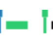

Welcome to Hidden Subtext!
In this tutorial, we will walk you through how to complete a segmentation task, which involves breaking up a video into segments by marking the beginnings and ends of speech.
The following should be marked:
Sentence Start: The speaker begins a new sentence.
Sentence End: The speaker ends a sentence.
Speech Start: The speaker starts talking.
Speech End: The speaker stops talking.
Speaker Pause: If the speaker is reciting a long sentence, any reasonable pauses within the sentence.
The created segments should be small enough to easily to write down without replaying the segment.
If at any time you wish to exit the tutorial, you may click
Exit
. If you would like to skip a step in the tutorial, you may click
Skip
Press next when you're ready to continue.
Beginning The Segmentation Process
To begin breaking up the video, you press the
Start
button
Press
Start
to begin breaking up the video.
Hotkeys
You can do everything in this task by pressing a sequence of keys on the keyboard.
For example, you may press
spacebar
instead of the
the
Start
button to begin breaking up the video.
Press
spacebar
to begin breaking up the video.
Marking Breaks in the Video
You make press
Break
or press
spacebar
to mark the beginnings and ends of speech.
Don't worry too much about getting the breaks correct the first time
Start the video and mark ten breaks
C in the video. Use
spacebar
C at least once.
The Segment Bar I
The segment bar how far you are in the video as well as any markers you added.
The segment bar is located underneath the video.
The segment bar is comprised of a regional view (bottom) and global view (top).
Click next to continue.
The Segment Bar II: The Global View
The global segment bar displays your progress over the entire video.
The blue area is the region you're focused on.
You may focus on different regions of the video by clicking on the global view.
Focus on three different regionsC using the global segment bar.
The Segment Bar III: The Region Segment Bar
The region you're focused on displayed in the regional view.
You may use the regional view to edit the segments you've created or add new segments
|
|
A break you marked in the video. |
|
Your mouse cursor. |
|
|
A segment. Defined by two breaks. |
|
The segment you're hovering over. |
|
 |
The selected segment |
|
Segment with no end marked |
Click next to continue
Selecting and Navigating Through Segments
You may select a segment in the regional view by clicking on a segment.
Once a segment is selected, you may move to the neighboring segments using the
left
and
right
arrow keys
When a segment is selected, the video corresponding to that segment automatically plays.
You may replay the selected segment using the
up
or
down
keys.
Select a segment
. Move to other segments using the
left
and
right
arrow keys.
Replay a segment using the
up
or
down
keys.
Adding A Break
You may mark a break by right-clicking on the regional view or pressing the
spacebar
key when a segment is playing.
Insert three breaks, one using the break button, one using the regional view, and one using the keyboard.
Removing a Break
You may remove a break at the end of the segment by selecting the segment and pressing the
z
or
delete
keys.
Remove a break using the
z
key or the
delete
key.
Shortening a Segment
You may shorten a segment by dragging your mouse to the left over a segment or selecting a segment and pressing the
x
key.
Shorten a segment four times.
Use the
x
key once
and drag your mouse left once
.
Lengthening a Segment
You may lengthen a segment by dragging your mouse to the right over a segment or selecting a segment and pressing the
c
key.
Lengthen a segment four times.
Use the
c
key once
and drag your mouse right once
.
Undoing and Redoing an Action
You may undo any delete, shift or add action at any point by pressinng
control
+
z
You may redo an action you reversed using undo by pressing
control
+
y
Press next to continue.
Putting it all together
That covers just about everything. If you ever wish to view this tutorial again,
press on the
Demonstration
button on the segmentation page.
Choose what you wish to do next.